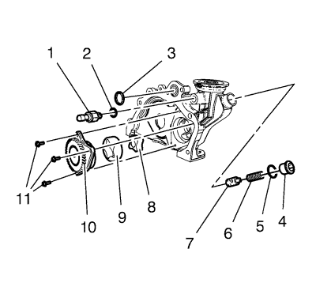

Diagnóstico y comprobación de la presión de aceite
Herramientas especiales
EN-498-B Indicador de presión de aceite
Si desea informarse sobre herramientas regionales equivalentes, consultar Herramientas especiales .
- Con el vehículo sobre una superficie nivelada, deje el vehículo con el motor en marcha durante unos minutos, deje pasar un tiempo de purga suficiente (2 a 3 minutos) y mida el nivel de aceite.
- Si es necesario, añada el aceite de motor de graduación recomendada y llene la carcasa del cigüeñal hasta que el nivel de aceite llegue hasta el indicador máximo de nivel de aceite.
- Ponga en marcha el motor un instante (10-15 segundos) y compruebe en el medidor o el indicador que no hay presión de aceite en el vehículo o es baja.
- Escuche cualquier ruido de golpeteo o ruido del tren de válvulas.
- Compruebe lo siguiente:
| • | Aceite diluido en agua o anticongelante de glicol |

- Desmonte el sensor de presión de aceite del motor (1).
- Monte el manómetro EN-498-B en el orificio roscado del sensor de presión de aceite del motor y apriételo a 30 N·m (23 lib. pies).
- Ponga en marcha el motor y mida la presión de aceite del motor.
- Compare las lecturas con Especificaciones mecánicas del motor .
- Si la presión de aceite del motor está por debajo de los valores especificados, compruebe que no se presenta ninguna de las siguientes circunstancias en el motor:
| • | Conductos de reparto de aceite agrietados, con poros u obstruidos. |
Atención: Este motor utiliza un filtro de aceite especial de alto rendimiento. El uso de cualquier otro filtro podría ocasionar su avería y/o daños graves en el motor.
- Si el valor de presión de aceite del manómetro EN-498-B, o equivalente, está dentro del margen especificado, compruebe si se dan las siguientes condiciones:
| • | Filtro de aceite incorrecto u obstruido o válvula de derivación de aceite averiada. Repárelos si es necesario. |
| • | Fallo de funcionamiento del manómetro EN-498-B o del sensor. Repárelos si es necesario. |
| © Copyright Chevrolet. Reservados todos los derechos |